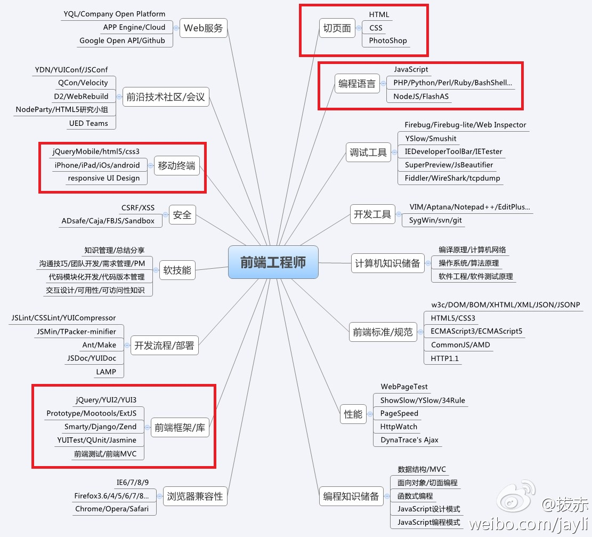
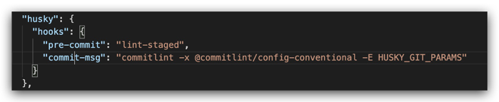

前端的自我修养
比程序员更懂设计，比设计师更懂编程
前端即网站前台部分，运行在PC端，移动端等浏览器上展现给用户浏览的网页。随着互联网技术的发展，HTML5，CSS3，前端框架的应用，跨平台响应式网页设计能够适应各种屏幕分辨率，完美的动效设计，给用户带来极高的用户体验。
从本质上讲，所有Web应用都是一种运行在网页浏览器中的软件，这些软件的图形用户界面（Graphical User Interface，简称GUI）即为前端。

前端的职责是什么？
1.与交互/视觉设计师协作，根据设计图完成页面制作。
2.了解产品需求，与产品确认更好的实现方式或者交互。
3.和后端同学合作，发现后端接口的问题，制定出更好的实现方式和接口设计，协助优化后端接口性能和对页面友好的数据结构
4.维护及优化网站前端性能。
5.使用JavaScript编写封装良好的前端交互组件和模块。
6.对Web项目的前端实现方案提供专业指导及监督。
7.设计并实施全网前端优化。
……
如何成长为一名靠谱的前端攻城狮？
模块化开发的工程意义不仅仅是复用，而应该是分治。不管你将来是否要复用某段代码，你都有充分的理由将其分治为一个模块。
模块化开发的原则：
● 页面上的每个 独立的 可视/可交互区域视为一个组件；
● 每个组件对应一个工程目录，组件所需的各种资源都在这个目录下就近维护；
● 由于组件具有独立性，因此组件与组件之间可以 自由组合；
● 页面只不过是组件的容器，负责组合组件形成功能完整的界面；
● 当不需要某个组件，或者想要替换组件时，可以整个目录删除/替换。
返回Sonar使用：
1. 启动sonar服务(SonarQube) （相当于tomcat）（sonar.sh的路径已经添加到全局path变量）
sonar.sh console
在浏览器打开http://localhost:9000/
2. 登录，用户名密码都是admin
3.添加项目。
之后会有sonar-project.properties配置的内容，并提示下载Scanner
4. 安装Scanner后，添加scanner的bin目录到全局path变量
5. 在项目中添加 sonar-project.properties 配置文件，内容参考 https://docs.sonarqube.org/latest/analysis/scan/sonarscanner/官网或者上面生成的配置
6. 在项目文件夹下执行
sonar-scanner
然后在http://localhost:9000/ 就可以看到结果啦
备注：需要提前安装好Java环境，并且node要在8.0或以上版本。
返回commitizen 是用来规范comment message的工具。
git的提交使用git commit -m "backup" 或者 git commit -m "fixbug" 来提交comment，但是一些像‘backup’ 或者 ‘fixbug’ 这样没有意义的comment让人无法理解这次的提交到底是为了什么。
commitizen的意义就在于可以避免这种提交，让git的提交信息变得具有可读性。
git提交规范
1：全局安装commitizen插件
npm install -g commitizen
2：定制项目的提交说明，可以使用cz-customizable适配器。
（2-1）：使用以下命令，在项目中安装适配器
npm install cz-customizable --save-dev
（2-2）：在package.json文件里手动配置如下内容：
"config": {
"commitizen": {
"path": "node_modules/cz-customizable"
}
},
（2-3）：在项目中添加配置.cz-config.js（汉化，并添加预置备选项）
5：也可以结合git的钩子工具，在每次提交时校验提交说明是否符合规范。

cz工具还有其他的适配器，可以使用以下网址学习：
我们从产品原型上得到的信息，应该首先是产品的需求，这个系统要实现什么功能，在充分了解需求之后，得到的对用户更友好的交互、网页的布局等信息。在很多ToC或者偏重UI的网站中，页面的样式应该根据设计师做出的UI设计图做。
没理清楚需求就写代码，通常会造成返工 重构延长排期。
1) input/textarea的maxLength的限制：在写html代码时，其实可以根据应用场景，对输入框的字数作下限制，优化用户体验，也能防止某些很长的值导致后台报错；
2) 纯数字/字母显示的控制：在页面的文字显示时，纯数字/字母往往默认是不会换行的，所以在实际编写过程中，考虑实际场景时候需要应用word-break: break-all属性；
3) 按钮防止重复点击的控制：表单提交后到后台的反馈是需要时间的，有时出问题也可能卡住，所以在做表单提交或者和后台交互的操作时，最好能防止多次触发请求，可以在点击后把按钮禁用，到收到后台的反馈后再放开；
4) 文件上传限制：在做文件或者图片上传时，大部分时候都会调用插件，在使用时，一定要把接受文件的类型（或大小）做一个限制，避免错误格式的文件上传时导致报错；
5）必要时需要添加一些动画效果，比如切换页面时的滑动翻页效果，点击按钮时波纹效果；
6）拖拽功能限制只能在一个维度操作（上下或者左右），否则用户容易误操作并且不易操作。
7）前端交互原则接近法则：根据格式塔（Gestalt）心理学：当对象离得太近的时候，意识会认为它们是相关的。在交互设计中表现为一个提交按钮会紧挨着一个文本框，因此当相互靠近的功能块是不相关的话，就说明交互设计可能是有问题的。
……
△ 静态资源使用CDN优化，缩短请求资源的时间
△ 减少HTTP请求
● 资源合并与压缩
● 从设计层面简化网页
● 合理设置HTTP缓存
● 将CSS或JavaScript放到外部文件中，避免使用style或script标签直接引入。外部资源可以有效的利用浏览器缓存。
● css精灵图
● 减少不必要的跳转
△ 减少对dom元素的操作，因为消耗性能；尽量预设图片等的大小，防止产生大量的重新排版
△ css选择符优化（注意浏览器对选择符的解析是从右往左进行的，减少在选择器的末尾添加通配符）
△ 图片压缩，较小图片使用base64内嵌图片；图片懒加载
△ 减少重定向，重定向会延长页面内容返回的等待时间
△ 移动端页面，首屏加载资源最小化，静态资源按需加载，非首屏内容滚屏加载
…………
返回🌱
阶段一：基础实现
用 HTML + CSS 完整还原设计稿
用 JavaScript 实现动态交互效果
了解浏览器兼容性与 Polyfill
掌握 Chrome DevTools 调试技巧
📋
阶段二：规范养成
代码风格统一，配置 ESLint + Prettier
Git 提交信息遵循 Conventional Commits
Code Review 中能给出有价值的意见
养成写注释和文档的习惯
🧩
阶段三：抽象复用
关注语义性与可重用性
封装公共组件库与工具函数
理解设计模式（观察者、工厂等）
代码从"能用"走向"好用易维护"
⚡
阶段四：性能意识
关注 LCP / FID / CLS 等 Web Vitals
掌握懒加载、CDN、HTTP 缓存策略
减少重排重绘，优化渲染链路
用 Lighthouse 量化性能瓶颈
🚀
阶段五：效率提升
搭建高效本地开发环境与脚手架
善用 AI 辅助工具（Cursor / Copilot）
自动化重复工作（脚本 / CI 流水线）
构建个人知识体系与技术雷达
🎯
阶段六：技术深度
深入掌握 Vue 3 / React + TypeScript
理解工程化、微前端与低代码架构
参与开源、输出技术文章与分享
从执行者成长为技术决策者
2026 年的前端技术生态
⚡ 主流框架与工具
🟢 Vue 3 — Composition API、`<script setup>`、Pinia 状态管理
⚛️ React 19 — Server Components、并发渲染、React Compiler
🔷 TypeScript 5.x — 强类型、装饰器、satisfies 操作符
⚡ Vite — 极速冷启动、模块热更新（HMR），取代 Webpack
🎨 Tailwind CSS v4 — 原子化 CSS，彻底告别手写样式
📦 pnpm / Monorepo — 高效依赖管理，Turborepo 加速构建
🧭 技术选型原则
● 社区活跃度：关注 GitHub Star 趋势、npm 周下载量
● 团队熟悉度：优先选择团队已掌握的技术，降低风险
● 长期维护性：评估背后的企业/组织是否持续投入
● 生态完整性：工具链、文档、周边库是否成熟
● 按需引入：不要为了用新技术而用，解决实际问题才是目标
前端工程化实践
🏗️ 工程化四大支柱
📋 规范化 — ESLint + Prettier + Stylelint + Husky + Commitlint
📦 模块化 — ES Modules、组件化开发、Tree Shaking
🚀 自动化 — CI/CD 流水线：代码检查 → 构建 → 测试 → 部署
📊 可观测性 — 错误监控（Sentry）、性能监控（Web Vitals）、日志上报
工程化的目标：让团队协作更顺畅，让代码质量更稳定，让发布更安全可靠。
🔄 典型 CI/CD 流程
1️⃣ 代码提交 — Pre-commit hook：格式检查、lint 校验
2️⃣ 代码审查 — Pull Request / Code Review
3️⃣ 自动构建 — 触发流水线：安装依赖 → 编译 → 单测
4️⃣ 自动部署 — 测试环境自动发布，生产环境手动审批
5️⃣ 监控告警 — 部署后监控错误率、性能指标，异常自动告警
前端安全不可忽视
🔐 常见安全威胁与防御
⚠️ XSS 跨站脚本攻击
防御：对用户输入进行转义；使用框架内置的模板绑定（Vue 的 v-html 慎用）
⚠️ CSRF 跨站请求伪造
防御：接口使用 Token 校验；设置 Cookie 的 SameSite 属性
⚠️ 敏感数据泄露
防御：不在前端存储密钥；HTTPS 传输；LocalStorage 不存敏感信息
⚠️ 依赖包安全漏洞
防御：定期执行 npm audit；锁定依赖版本；使用 Dependabot
🛡️ 前端安全最佳实践
● 开启 CSP（内容安全策略），限制脚本、样式的加载来源
● 所有外链资源添加 SRI（子资源完整性） 校验
● 接口请求统一走 HTTPS，禁止混合内容（Mixed Content）
● 定期进行安全审计和渗透测试
● 最小权限原则：前端只获取当前页面所需的数据
安全不是后端的专属，前端同样是攻击面的一部分。
拥抱 AI，提升开发效率
🤖 主流 AI 开发辅助工具
🖱️ Cursor IDE — AI 原生编辑器，支持多文件理解与改写
🐙 GitHub Copilot — 代码补全、测试生成、PR 描述自动生成
💬 Claude / GPT-4o — 架构设计、代码审查、难题解答
🔍 v0 / Bolt — 根据描述直接生成 UI 组件代码
📝 AI Code Review — PR 自动扫描，指出潜在问题
💡 高效使用 AI 的原则
✅ 提供充分上下文 — 描述背景、约束和期望结果，而不只是问"怎么做"
✅ 批判性看待输出 — AI 会"幻觉"，务必验证代码的正确性
✅ 用于提速，不用于替代思考 — 理解生成的代码，保持对系统的掌控
✅ 注意数据安全 — 公司敏感代码、密钥不要粘贴到公共 AI 工具
AI 是工具，用好工具的前提是你得先会干活。
前端测试体系建设
🧪 测试金字塔
🔺 E2E 端到端测试（少量）— Playwright / Cypress
模拟真实用户操作，覆盖关键业务流程
🔶 集成测试（适量）— Testing Library
测试组件与 API 的协作，验证页面行为
🟩 单元测试（大量）— Vitest / Jest
测试纯函数、工具方法，运行快速、易维护
不要追求 100% 覆盖率，要测有价值的逻辑。
✅ 前端测试最佳实践
● 遵循 AAA 模式：Arrange（准备）→ Act（执行）→ Assert（断言）
● 测试行为，而非实现细节（换一种写法，测试不应该挂掉）
● Mock 外部依赖（接口、定时器），让测试稳定且快速
● 每个测试只验证一件事，命名清晰："should [结果] when [条件]"
● 测试代码与业务代码放在一起：Button.vue 旁放 Button.spec.ts
Core Web Vitals
性能指标体系
📊 Google 三大核心指标
🟢 LCP（最大内容绘制） — 衡量加载速度
目标：< 2.5s | 优化：图片懒加载、CDN、预加载关键资源
🟡 FID / INP（交互响应延迟） — 衡量交互流畅度
目标：INP < 200ms | 优化：减少长任务、Web Worker 分流
🔵 CLS（累积布局偏移） — 衡量视觉稳定性
目标：< 0.1 | 优化：预设图片尺寸、避免动态插入内容
工具：Lighthouse、PageSpeed Insights、web-vitals.js
微前端架构模式
🏢 什么是微前端？
将一个大型前端应用拆分为多个独立子应用，由不同团队独立开发、部署。
🛠️ 主流方案
● qiankun（阿里）— 基于 single-spa，接入成本低
● Module Federation（Webpack 5）— 模块共享，编译时集成
● iframe — 最简单隔离，但通信和样式共享麻烦
⚠️ 适用场景：多团队协作的中大型平台，谨慎引入（有额外复杂度）
📌 今天分享了什么？
1. 前端的定义、职责与学习路线
2. 如何养成靠谱的前端工作习惯（规范、复用、优化）
3. 前端进阶的六个阶段（正方体展示）
4. 现代前端技术生态（Vue 3 / React / TypeScript / Vite）
5. 前端工程化：规范化、模块化、自动化、可观测性
6. 前端安全：XSS / CSRF / CSP / 依赖漏洞防范
7. AI 赋能开发：Cursor / Copilot / v0 使用原则
8. 前端测试体系：单元 / 集成 / E2E 测试金字塔
9. Core Web Vitals：LCP / INP / CLS 性能指标
10. 微前端架构：qiankun / Module Federation
🎉
感谢聆听
持续学习，拥抱变化
做一个有工匠精神的前端工程师
— 灵集前端团队